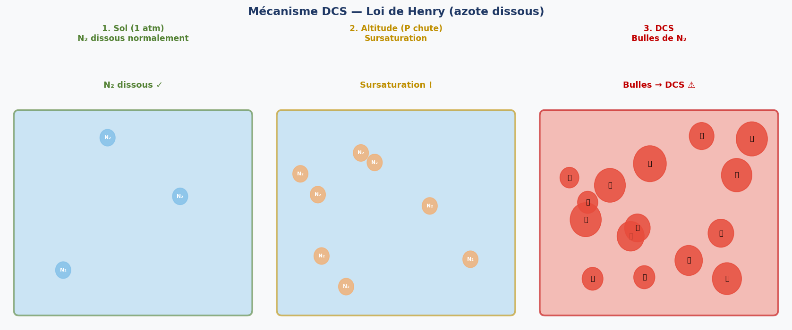
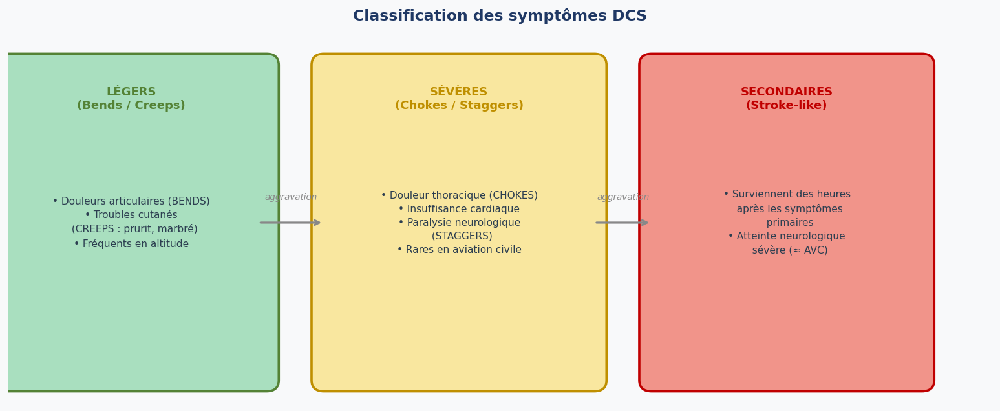
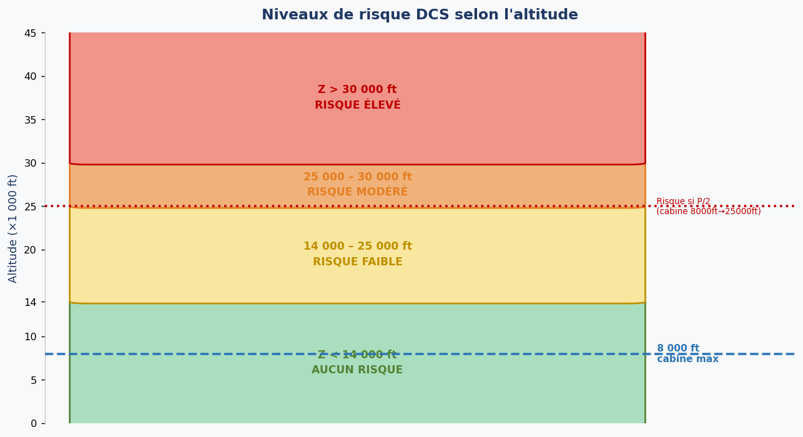
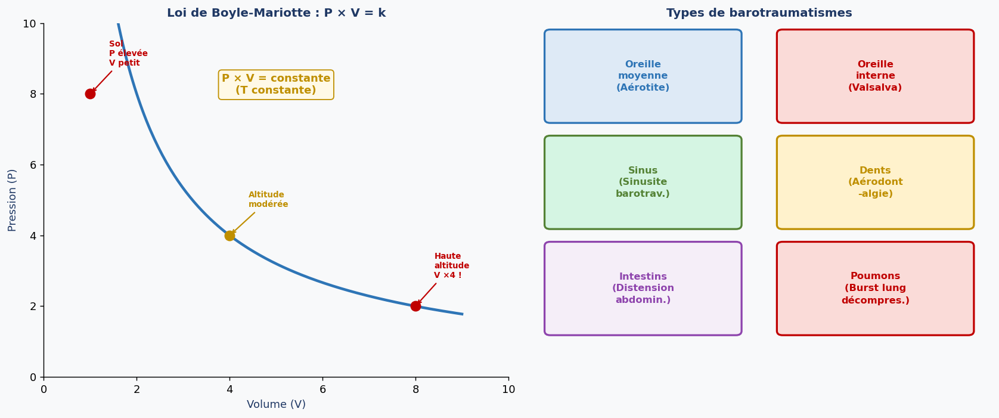
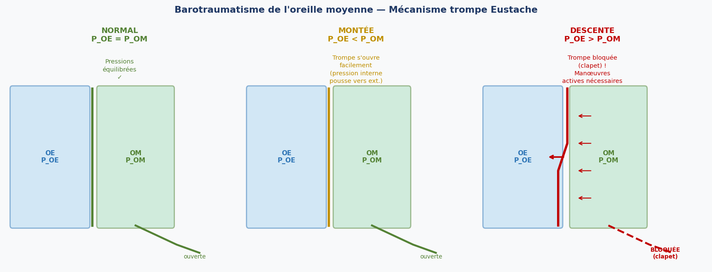
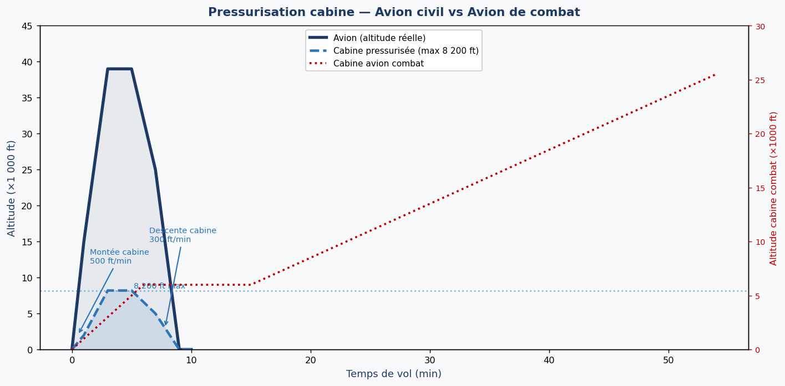

1. Introduction — Gaz dans l'organisme
L'organisme humain contient environ 10 dm³ de gaz répartis sous trois formes physico-chimiques distinctes, chacune avec ses propres conséquences pathologiques en aviation :
- Forme libre — dans les poumons, le tube digestif, les sinus, l'oreille moyenne → risque de barotraumatisme (loi de Boyle-Mariotte)
- Forme dissoute — principalement l'azote (N₂) dans les tissus → risque de maladie de décompression (loi de Henry)
- Forme combinée — l'oxygène lié à l'hémoglobine → pas de risque barique direct
Forme dissoute → Henry → DCS (bullage de l'azote dissous lors de la dépressurisation)
2. Maladie de décompression (DCS)
2.1 Loi de Henry
La loi de Henry énonce que la quantité de gaz dissoute dans un liquide est proportionnelle à la pression partielle de ce gaz dans la phase gazeuse en contact avec ce liquide. En pratique : plus la pression ambiante est élevée, plus l'azote se dissout dans les tissus. Inversement, si la pression chute brutalement, l'azote en excès sort de solution et forme des bulles.
Avec C = concentration dissoute, kH = constante de Henry, P = pression partielle du gaz
2.2 Mécanisme de la DCS
L'organisme contient environ 1 dm³ d'azote dissous. Ce gaz se stocke préférentiellement dans les graisses, où il est 6 fois plus soluble que dans l'eau. De ce fait, 70 % de l'azote corporel est stocké dans les tissus adipeux.
Lors d'une dépressurisation (montée en altitude non pressurisée ou perte de pressurisation), la pression partielle d'azote chute. L'azote dissous devient en sursaturation et tend à sortir de solution. S'il sort trop rapidement, il forme des bulles gazeuses dans le sang et les tissus : c'est la DCS.

Analogie : bouteille de soda ouverte brutalement → les bulles de CO₂ sortent de solution.
2.3 Symptômes de la DCS
Les symptômes de la DCS se classifient en trois catégories selon leur gravité et leur délai d'apparition :

Symptômes légers :
- Bends — douleurs articulaires (genoux, hanches, épaules). Signe le plus fréquent en aviation
- Creeps — troubles cutanés (prurit, marbrures, sensation de fourmillements ou de puces : "fleas and sheep")
Symptômes sévères (rares en aviation civile) :
- Chokes — douleur thoracique, toux sèche, dyspnée, voire insuffisance cardiaque (bulles dans la circulation pulmonaire)
- Staggers — atteinte neurologique : paralysie, troubles visuels, confusion, troubles vestibulaires
Symptômes secondaires :
- Survenant des heures après les symptômes primaires, sous forme d'atteinte neurologique sévère comparable à un accident vasculaire cérébral (AVC). Peuvent apparaître jusqu'à 24 heures après l'exposition.
2.4 Facteurs de risque DCS
2.4.1 Facteurs environnementaux

La règle du P/2 est importante : le risque DCS apparaît significativement lorsque la pression ambiante chute de moitié. Une cabine maintenue à 8 000 ft (812 hPa) génère un risque si l'altitude réelle dépasse 25 000 ft (406 hPa = P/2).
2.4.2 Facteurs de risque individuels
- Âge > 40 ans — le risque augmente drastiquement
- Obésité +++ — tissu adipeux abondant = plus d'azote stocké
- Plongée sous-marine +++ — la plongée avec air comprimé augmente la charge en azote dissous
- Effort musculaire intense (augmente la vascularisation et la libération de bulles)
- Hypoxie concomitante
- Écarts thermiques importants (froid)
- Répétition des expositions à l'altitude
Après plongée à moins de 10 mètres (même avec air comprimé) : ne pas voler avant 24 heures.
La plongée augmente la charge en azote dissous, aggravant le risque DCS en altitude.
2.5 Procédure en cas de perte de pressurisation
La séquence à exécuter sans délai :
- Mettre le masque à oxygène immédiatement
- Effectuer une descente d'urgence, atterrir dès que possible
- Consulter le médecin navigant
- Aucun vol pendant au minimum 24 heures
- Surveiller l'apparition de symptômes DCS jusqu'à 24 heures après
En cas de dépressurisation → descente d'urgence en 3 minutes sous 25 000 ft.
2.6 Prévention de la DCS
- Pressurisation cabine (moyen principal)
- Procédures de descente d'urgence si dépressurisation accidentelle
- Pré-oxygénation (pré-breathing) avant exposition à très haute altitude (vols non pressurisés, saut en parachute à haute altitude, EVA spatiales) : respirer de l'O₂ pur élimine progressivement l'azote dissous
- Respecter les délais après plongée (12h / 24h)
3. Barotraumatismes
3.1 Loi de Boyle-Mariotte
La loi de Boyle-Mariotte stipule qu'à température constante, le volume d'un gaz est inversement proportionnel à sa pression. Plus la pression est grande, plus le volume est petit — et inversement.
P₁ × V₁ = P₂ × V₂
Exemple : 4 × 5 = 8 × 2,5 → si P double, V est divisé par 2
En altitude : P chute → V augmente → gaz emprisonnés dans les cavités se dilatent
3.2 Mécanisme général
Un barotraumatisme est une lésion causée par la dilatation ou la contraction de gaz emprisonné dans les cavités closes de l'organisme (oreille moyenne, sinus, dents, intestins, poumons) lors des changements de pression ambiante. Les conséquences vont d'un simple inconfort à des douleurs extrêmes.
En aviation, les barotraumatismes sont particulièrement fréquents lors des phases de montée et de descente, et préférentiellement aux basses altitudes où les variations de pression par unité d'altitude sont les plus importantes (gradient de pression maximal entre 0 et 5 000 ft).

3.3 Barotraumatisme de l'oreille moyenne (Aérotite)
3.3.1 Mécanisme
En conditions normales, la pression de l'oreille externe (POE) est égale à la pression de l'oreille moyenne (POM), grâce à l'ouverture intermittente de la trompe d'Eustache lors des mouvements de déglutition.

Lors de la montée : POE < POM — la surpression interne pousse naturellement l'air vers l'extérieur via la trompe : équilibration facile et passive.
Lors de la descente : POE > POM — la trompe d'Eustache fonctionne comme un clapet anti-retour et empêche le flux de rentrer passivement. Des manœuvres actives sont nécessaires.
- Valsalva — pincer le nez et souffler doucement (avec précaution : risque si trop brutal)
- Déglutition — avaler de la salive
- Bâillement
- Mouvements de la mâchoire latéraux
3.3.2 Facteurs favorisants
- Infection des voies aériennes supérieures (rhinite, sinusite, allergie) → trompe inflammée et obstruée
- Malformation anatomique de la trompe d'Eustache
- Vitesse de variation de pression (Vsp) trop élevée
3.3.3 Symptômes
Signes d'alerte : sensation d'oreille pleine, réduction d'audition, acouphènes (tinnitus), vertiges.
Symptômes francs : douleur graduelle ou soudaine, vertiges, dans les cas extrêmes rupture du tympan avec saignement → surdité possible.
Conséquences médicales anatomiques : rétraction ou perforation tympanique, épanchement. Cliniques : otalgie, hypoacousie, otorragie, troubles de l'équilibre. Complications : infection secondaire, guérison vicieuse du tympan.
3.3.4 Conduite à tenir
En vol : réduire ou stopper la descente, manœuvre de Valsalva.
Au sol : consultation médecin navigant + ORL, traitement selon gravité. Éviction de vol : 5 jours à 2 mois. Ne jamais reprendre avant guérison complète.
Prévention : apprendre les manœuvres d'équilibration, éviter tout vol enrhumé, décongestionnants locaux 15 minutes avant la descente.
3.4 Barotraumatisme de l'oreille interne
Causes : manœuvre de Valsalva trop brutale ou décompression explosive. La surpression brusque transmise à l'oreille interne peut déchirer des membranes délicates.
- Conséquences immédiates : hypoacousie, acouphènes, vertiges
- Complications : surdité de perception (irréversible), vertiges sévères
- Traitement : difficile, selon gravité. La prévention est la meilleure solution.
3.5 Barotraumatisme des sinus (Aérosinusite)
Les sinus sont des cavités osseuses communicantes avec le rhinopharynx. Contrairement à l'oreille moyenne, l'équilibration sinusienne est passive (pas de manœuvre active possible). Si l'ostium sinusien est obstrué (mucus, polype, infection), le gaz ne peut pas s'équilibrer.
Facteurs favorisants : sinusite, polypes, déviation septale nasale, œdème muqueux.
Signes d'alerte : sensation de bulles dans le nez à la montée, sensation de plénitude frontale à la descente.
Symptômes : douleur péri-orbitaire progressive ou soudaine irradiant dans les joues et les dents, vertiges, épistaxis, syncope dans les cas sévères.
Conduite à tenir pour les sinus
En vol : STOPPER l'évolution, revenir à l'altitude saine précédente, sprays décongestionnants nasaux si disponibles, descente très lente.
À noter : les manœuvres d'équilibration de type Valsalva sont inutiles pour les sinus (pas de mécanisme actif).
Au sol : consultation ORL + scanner + dentiste, éviction minimum 3 semaines.
3.6 Aérodontalgie
Expansion de bulles gazeuses dans la pulpe dentaire lors de la montée en altitude, en présence d'une dent cariée ou d'une obturation dentaire défectueuse. La symptomatologie est une douleur dentaire intense. Conduite : annuler la montée, entretien dentaire régulier (tous les 6 mois).
3.7 Barotraumatisme digestif
Le tube digestif contient des gaz (air dégluti, fermentation) qui se dilatent à la montée selon la loi de Boyle-Mariotte. Cela provoque une distension abdominale douloureuse. Prévention : éviter les aliments producteurs de gaz avant le vol (choux, légumineuses, boissons gazeuses), manger lentement, interdire les chewing-gums en vol.
3.8 Burst lung (Éclatement pulmonaire)
Lors d'une décompression rapide ou explosive de la cabine, la chute brutale de pression extérieure provoque une expansion violente des gaz dans les poumons. Si le pilote retient sa respiration (glotte fermée), la surpression relative peut atteindre la limite de résistance des alvéoles.
Facteurs déterminants : altitude atteinte, niveau de pressurisation, surface de la brèche.
Conduite réflexe : garder la glotte ouverte (ne pas retenir sa respiration) pour permettre l'expulsion naturelle du surplus d'air. Laisser l'air sortir librement.
4. Pressurisation de la cabine
4.1 Principe général
La pressurisation maintient la cabine à une pression supérieure à la pression extérieure, grâce à un système d'admission d'air (prélèvement sur compresseurs moteurs) et d'évacuation régulée par une vanne de surpression. L'altitude cabine est réglée par le bouton de commande d'altitude, qui contrôle l'ouverture de cette vanne.

4.2 Avion de combat
Les avions de combat utilisent une loi de pressurisation différente, basée sur la formule Zcab = (Zext − 3 000) / 2 au-delà de 15 000 ft, avec un palier à 6 000 ft pour les altitudes extérieures inférieures à 15 000 ft. Cela signifie que l'altitude cabine augmente progressivement avec l'altitude réelle de l'avion, exposant davantage le pilote aux risques d'hypoxie et de DCS à très haute altitude.
Valable pour Zext > 15 000 ft.
Pour Zext < 15 000 ft : Zcab = 6 000 ft (palier constant).